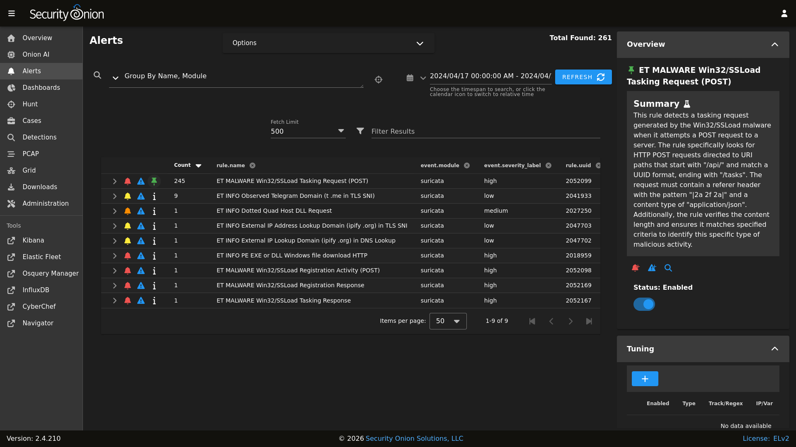
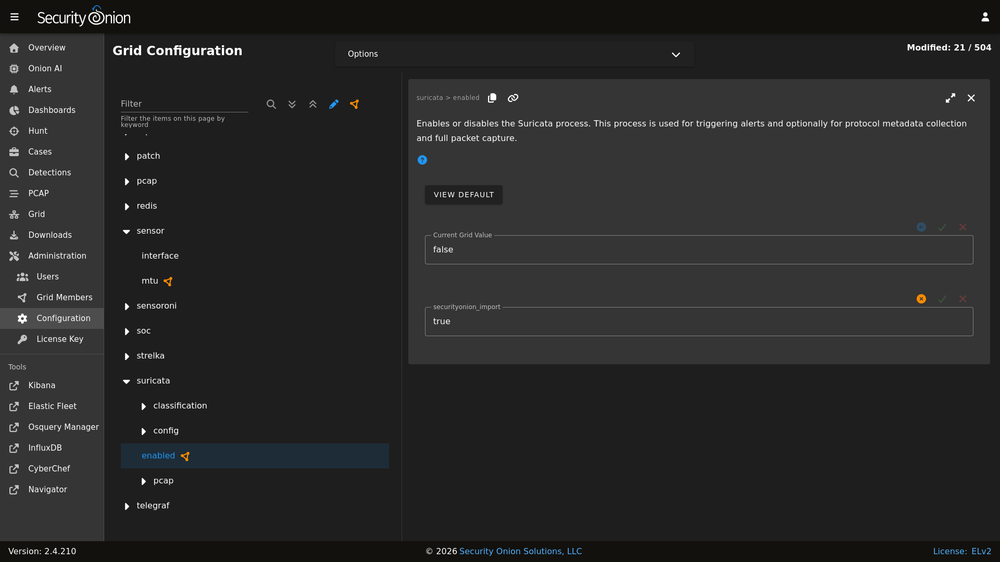
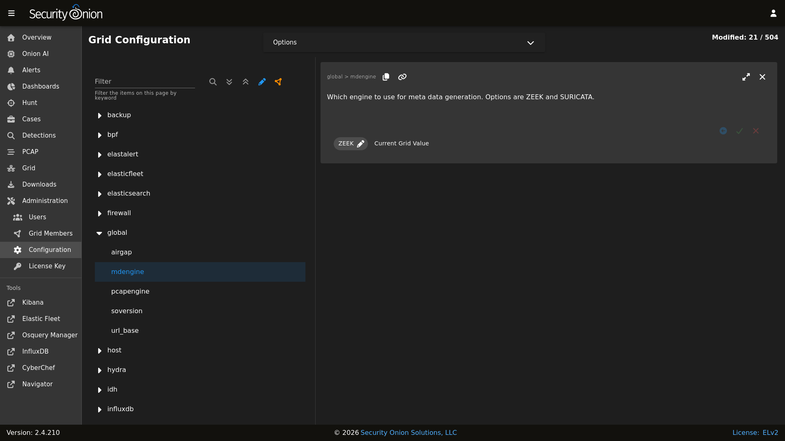

Suricata
From https://suricata.io:
Suricata is a free and open source, mature, fast and robust network threat detection engine. Suricata inspects the network traffic using a powerful and extensive rules and signature language, and has powerful Lua scripting support for detection of complex threats.
Suricata NIDS alerts can be found in Alerts, Dashboards, Hunt, and Kibana.
Here’s an example of Suricata NIDS alerts in Alerts:
{kind=link}

If enabled, Suricata metadata (protocol logs) can be found in Dashboards, Hunt, and Kibana.
Community ID
Security Onion enables Suricata’s built-in support for Community ID.
Configuration
You can configure Suricata by going to Administration –> Configuration –> suricata.
{kind=link}

If you would like to configure NIDS rules, take a look at the Detections interface.
HOME_NET
The HOME_NET variable defines the networks that are considered home networks (those networks that you are monitoring and defending). The default value is RFC1918 private address space (10.0.0.0/8, 192.168.0.0/16, and 172.16.0.0/12). You can modify this default value by going to Administration –> Configuration –> suricata –> config –> vars –> address-groups –> HOME_NET.
EXTERNAL_NET
By default, EXTERNAL_NET is set to any (which includes HOME_NET) to detect lateral movement inside your environment. You can modify this default value by going to Administration –> Configuration –> suricata –> config –> vars –> address-groups –> EXTERNAL_NET.
Stats
For Suricata statistics, see Grid, InfluxDB, and /opt/so/log/suricata/stats.log.
Performance
If Grid shows that Suricata is experiencing packet loss, then you may need to do one or more of the following:
Tune the NIDS ruleset.
Apply a BPF.
Adjust
max-pending-packetsin Administration –> Configuration –> suricata –> config –> max-pending-packets.Adjust AF-PACKET workers in Administration –> Configuration –> suricata –> config –> af-packet –> threads.
Note
If you have multiple physical CPUs, you’ll most likely want to pin sniffing processes to a CPU in the same Non-Uniform Memory Access (NUMA) domain that your sniffing NIC is bound to. Accessing a CPU in the same NUMA domain is faster than across a NUMA domain.
Note
lscpu and lstopo, please see:Metadata
By default, Security Onion uses Zeek to record protocol metadata. If you don’t need all of the protocol coverage that Zeek provides, then you can switch to Suricata metadata to save some CPU cycles. If you choose to do this, then here are some of the kinds of metadata you can expect to see in Dashboards or Hunt:
Connections
DHCP
DNS
Files
FTP
HTTP
SSL
If you later find that some of that metadata is unnecessary, you can enable the SO_FILTERS ruleset to filter out unnecessary metadata. Navigate to Administration –> Configuration –> soc –> config –> server –> modules –> suricataengine –> rulesetSources and enable the SO_FILTERS ruleset.
To change your grid’s metadata engine from Zeek to Suricata, go to Administration –> Configuration –> global –> mdengine and change the value from ZEEK to SURICATA:
{kind=link}

File Extraction
If you choose Suricata for metadata, it will extract files from network traffic and Strelka will then analyze those extracted files. The SO_EXTRACTIONS ruleset controls which file types are extracted and is enabled by default when Suricata is the metadata engine. You can customize file extraction by modifying rules in this ruleset.
PCAP
For new installations in either Eval or Standalone mode, full packet capture is written to /nsm/suripcap/ by Suricata. For other deployments, full packet capture is written to disk by Stenographer but you can optionally switch this to Suricata.
Switching PCAP from Stenographer to Suricata
Warning
If you are considering switching your existing deployment from Stenographer to Suricata PCAP, then we recommend that you test this feature thoroughly in a test environment first.
To switch from Stenographer to Suricata for PCAP, go to Administration –> Configuration –> Global and select the pcapengine setting. That setting should default to STENO but you can change it to either TRANSITION or SURICATA. If you don’t need your old Stenographer PCAP at all, then you can immediately set pcapengine to SURICATA and manually delete the contents of the Stenographer PCAP and index directories. However, most folks will probably want to use the TRANSITION option as it will keep Stenographer running but not capturing traffic so that you can retrieve older Stenographer PCAP as well as new Suricata PCAP. Stenographer will then start purging its old PCAP as Suricata uses more space. Once your old Stenographer PCAP has fully aged off, you can change the pcapengine setting to SURICATA to fully disable Stenographer.
Differences between Suricata and Stenographer for PCAP
Stenographer indexes PCAP which allows instant retrieval of PCAP sessions from disk. When a Suricata PCAP is requested, a process searches the PCAP files and retrieves the appropriate packets for the flow.
Since Stenographer indexes PCAP, it stores the PCAP in a special format. Suricata writes standard PCAP files which can be copied off to another system and then opened with any standard libpcap tool.
Suricata can optionally compress PCAP using lz4 compression.
Suricata supports conditional PCAP if you only want to write PCAP when certain conditions are met.
Suricata has the ability to stop capturing PCAP once a flow reaches a specific stream depth. Security Onion sets this stream depth to 1MB by default. This means that once the PCAP flow reaches 1MB, Suricata will stop recording packets for that flow.
Conditional PCAP
If you switch to Suricata PCAP, it will write all network traffic to PCAP by default. If you would like to limit Suricata to only writing PCAP when certain conditions are met, you can go to Administration –> Configuration –> Suricata -> pcap -> conditional and change it to to either alerts or tag:
all: Capture all packets seen by Suricata (default).
alerts: Capture only packets associated with a NIDS alert.
tag: Capture packets based on a rule that is tagged.
PCAP Configuration Options
Here are some other PCAP configuration options that can be found at Administration –> Configuration –> Suricata -> pcap. Some settings are considered advanced settings so you will only see them if you enable the Show advanced settings option.
compression: Set to
noneto disable compression. Set tolz4to enable lz4 compression but note that this requires more CPU cycles.lz4-level: lz4 compression level of PCAP files. Set to
0for no compression. Set to16for maximum compression.maxsize: Maximum size in GB for total disk usage of all PCAP files written by Suricata. If you originally installed version 2.4.60 or newer, then this value should have been set based on a percentage of your disk space. If you originally installed a version older than 2.4.60, then this value should have been set to
25by default. You may need to adjust this value based on your disk space and desired pcap retention.filesize: Maximum file size for individual PCAP files written by Suricata. Increasing this number could improve write performance at the expense of pcap retrieval time.
use-stream-depth: Set to
noto ignore the stream depth and capture the entire flow. Set toyesto truncate the flow based on the stream depth.
Diagnostic Logging
If you need to troubleshoot Suricata, check /opt/so/log/suricata/suricata.log. Depending on what you’re looking for, you may also need to look at the Docker logs for the container:
sudo docker logs so-suricata
Testing
The first and easiest way to test Suricata is to access http://testmynids.org/uid/index.html from a machine that is being monitored by your Security Onion deployment. You can do so via the command line using curl:
curl testmynids.org/uid/index.html
If everything is working correctly, you should see a corresponding alert (GPL ATTACK_RESPONSE id check returned root) in Alerts. You should also be able to find the alert in Dashboards or Hunt.
If you do not see this alert, try checking to see if the rule is enabled by going to Detections and searching for the SID of the rule which is 2100498. One way to search for this rule is to specify it in the URL as follows:
Another way to test Suricata is with a utility called tmNIDS. You can run the tool in interactive mode like this:
curl -sSL https://raw.githubusercontent.com/0xtf/testmynids.org/master/tmNIDS -o /tmp/tmNIDS && chmod +x /tmp/tmNIDS && /tmp/tmNIDS
Finally, you can also test Suricata alerting by replaying some test pcap files via so-test.
Troubleshooting Alerts
If you’re not seeing the Suricata alerts that you expect to see, here are some things that you can check:
If you have metadata enabled, check to see if you have metadata for the connections. Depending on your configuration, this could be Suricata metadata or Zeek metadata. Go to Dashboards, click the dropdown menu, select the
Connections seen by Zeek or Suricatadashboard, and see if the connections you expect to see in your network traffic are listed there.If you have metadata enabled but aren’t seeing any metadata, then something may be preventing the process from seeing the traffic. Check to see if you have any BPF configuration that may cause the process to ignore the traffic. If you’re sniffing traffic from the network, verify that the traffic is reaching the NIC using tcpdump. If importing a pcap file, verify that file contains the traffic you expect and that the Suricata process can read the file and any parent directories.
Check to see if you have mixed VLAN tags (VLAN tags in one direction but not the other). If so, see the VLAN Tags section above to configure Suricata appropriately.
Check your HOME_NET configuration to make sure it includes the networks that you’re watching traffic for.
Check to see if you have a full NIDS ruleset with rules that should specifically alert on the traffic and that those rules are enabled.
Check to see if you have any threshold or suppression configuration that might be preventing alerts.
Check the Suricata log for additional clues.
Check the Elastic Agent, Logstash, and Elasticsearch logs for any pipeline issues that may be preventing the alerts from being written to Elasticsearch.
Try installing a simple import node (perhaps in a VM) following the steps in the First Time Users section and see if you get alerts there. If so, compare the working system to the non-working system and determine where the differences are.
Testing Rules
To test a new rule, use the following utility on a node that runs Suricata (ie Sensor or Import).
sudo so-suricata-testrule <Filename> /path/to/pcap/test.pcap
The file should contain the new rule that you would like to test. The pcap should contain network data that will trigger the rule.
Variables
To add or modify Suricata Variables, navigate to suricata > config > vars > address-groups or port-groups.
You can assign a list of hosts, networks, or other customizations to a Suricata variable. The variable can then be re-used within Suricata rules and/or Overrides. This allows for a single adjustment to the variable that will affect all rules referencing it.
### Address Groups
Address groups define IP addresses or network ranges. Suricata comes with a number of common address groups already defined.
#### Address Group Syntax
Values can be specified using the following formats (single or multi-line):
Single IP: 192.168.1.100
CIDR notation: 192.168.1.0/24
IP range: 192.168.1.1-192.168.1.50
Multiple values: 192.168.1.0/24,10.0.0.0/8
Negation: !192.168.1.100 or !$OTHER_VAR
Variable reference: $HOME_NET
### Port Groups
Port groups define TCP/UDP ports for specific services. Suricata comes with a number of common port groups already defined.
#### Port Group Syntax
Values can be specified using the following formats (single or multi-line):
Single port: 80
Port range: 1024:65535
Multiple ports: 80,443,8080
Negation: !80
Any port: any
### Custom Variables
Create custom variables by selecting an existing Address Group or Port Group and clicking “Duplicate”. Enter a name using uppercase naming convention, then click “Create Setting”.
Note: The new variable is not saved until you modify its value and click the green “Save Changes” checkmark.
Disabling
If you need to disable Suricata, you can do so via Administration –> Configuration –> suricata –> enabled.
More Information
Note
For more information about Suricata, please see https://suricata.io.